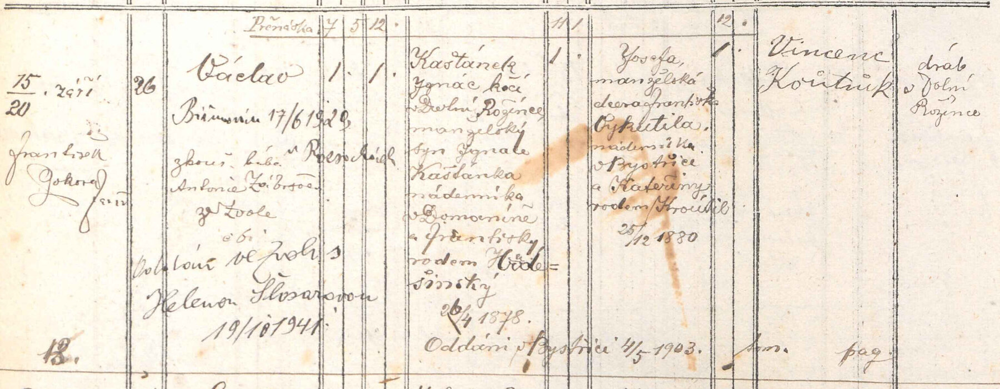

Václav, narozen 15. 9. 1914 v Dolní Rožínce čp. 26, pokřtěn 20. 9.; syn Ignáce Kaštánka (* 26. 4. 1878), kočího v Dolní Rožínce, a Josefy roz. Vykutilové (* 25. 12. 1880) z Bystřice; rodiče oddáni v Bystřici 4. 5. 1903. Na okraji: biřmován 17. 6. 1929, oddán ve Zvoli s Helenou Šlosárovou 19. 10. 1941.

Text z matriky a překlad
Přepis originálu
Václav, narozen 15. 9. 1914 v Dolní Rožínce čp. 26, pokřtěn 20. 9.; syn Ignáce Kaštánka (* 26. 4. 1878), kočího v Dolní Rožínce, a Josefy roz. Vykutilové (* 25. 12. 1880) z Bystřice; rodiče oddáni v Bystřici 4. 5. 1903. Na okraji: biřmován 17. 6. 1929, oddán ve Zvoli s Helenou Šlosárovou 19. 10. 1941.
Překlad
Václav, narozen 15. 9. 1914 v Dolní Rožínce čp. 26, pokřtěn 20. 9.; syn Ignáce Kaštánka (* 26. 4. 1878), kočího v Dolní Rožínce, a Josefy roz. Vykutilové (* 25. 12. 1880) z Bystřice; rodiče oddáni v Bystřici 4. 5. 1903. Na okraji: biřmován 17. 6. 1929, oddán ve Zvoli s Helenou Šlosárovou 19. 10. 1941.